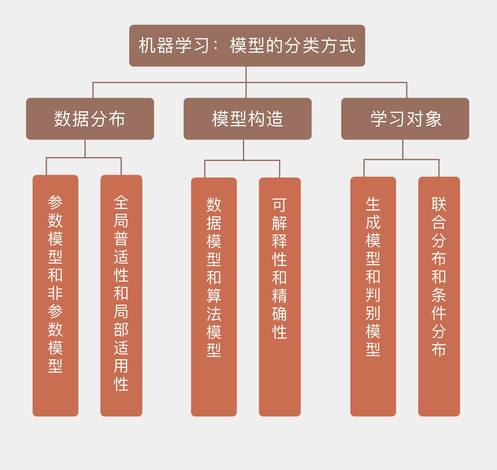

- 00 开篇词 打通修炼机器学习的任督二脉.md.html
- 01 频率视角下的机器学习.md.html
- 02 贝叶斯视角下的机器学习.md.html
- 03 学什么与怎么学.md.html
- 04 计算学习理论.md.html
- 05 模型的分类方式.md.html
- 06 模型的设计准则.md.html
- 07 模型的验证方法.md.html
- 08 模型的评估指标.md.html
- 09 实验设计.md.html
- 10 特征预处理.md.html
- 11 基础线性回归：一元与多元.md.html
- 12 正则化处理：收缩方法与边际化.md.html
- 13 线性降维：主成分的使用.md.html
- 14 非线性降维：流形学习.md.html
- 15 从回归到分类：联系函数与降维.md.html
- 16 建模非正态分布：广义线性模型.md.html
- 17 几何角度看分类：支持向量机.md.html
- 18 从全局到局部：核技巧.md.html
- 19 非参数化的局部模型：K近邻.md.html
- 20 基于距离的学习：聚类与度量学习.md.html
- 21 基函数扩展：属性的非线性化.md.html
- 22 自适应的基函数：神经网络.md.html
- 23 层次化的神经网络：深度学习.md.html
- 24 深度编解码：表示学习.md.html
- 25 基于特征的区域划分：树模型.md.html
- 26 集成化处理：Boosting与Bagging.md.html
- 27 万能模型：梯度提升与随机森林.md.html
- 28 最简单的概率图：朴素贝叶斯.md.html
- 29 有向图模型：贝叶斯网络.md.html
- 30 无向图模型：马尔可夫随机场.md.html
- 31 建模连续分布：高斯网络.md.html
- 32 从有限到无限：高斯过程.md.html
- 33 序列化建模：隐马尔可夫模型.md.html
- 34 连续序列化模型：线性动态系统.md.html
- 35 精确推断：变量消除及其拓展.md.html
- 36 确定近似推断：变分贝叶斯.md.html
- 37 随机近似推断：MCMC.md.html
- 38 完备数据下的参数学习：有向图与无向图.md.html
- 39 隐变量下的参数学习：EM方法与混合模型.md.html
- 40 结构学习：基于约束与基于评分.md.html
- 如何成为机器学习工程师？.md.html
- 总结课 机器学习的模型体系.md.html
- 总结课 贝叶斯学习的模型体系.md.html
- 结课 终有一天，你将为今天的付出骄傲.md.html
- 捐赠
05 模型的分类方式
机器学习学的是输入和输出之间的映射关系，学到的映射会以模型的形式出现。从今天开始，我将和你聊聊关于模型的一些主题。
大多数情况下，机器学习的任务是求解输入输出单独或者共同符合的概率分布，或者拟合输入输出之间的数量关系。从数据的角度看，如果待求解的概率分布或者数量关系可以用一组有限且固定数目的参数完全刻画，求出的模型就是参数模型（parametric model）；反过来，不满足这个条件的模型就是非参数模型（non-parametric model）。
参数模型的优点在于只用少量参数就完整地描述出数据的概率特性，参数集中的每个参数都具有明确的统计意义。你可以回忆一下常用的典型概率分布，离散变量的二项分布\(B(n, p)\)只包含两个参数，分别代表独立重复试验的次数和每次试验中事件发生的概率；连续变量的正态分布\(N(\\mu, \\sigma)\)也是只包含两个参数，分别代表着随机变量的均值和方差。所以在参数模型的学习中，算法的任务就是求出这些决定概率特性的参数，只要参数确定了，数据的统计分布也就确定了，即使未知的数据无穷无尽，我们也可以通过几个简单的参数来确定它们的性质。
为什么在参数模型中，有限的参数就能够描述无限的数据呢？想必你已经发现，这样的便捷来自于超强的先验假设：所有数据符合特定类型的概率分布。在实际的学习任务中，我们并非对问题一无所知，通常会具有一定的先验知识。先验知识并不源于对数据的观察，而是先于数据存在，参数模型恰恰就是先验知识的体现与应用。
先验知识会假定数据满足特定的先验分布，学习的过程就是利用训练数据估计未知参数的过程，一旦得出未知参数的估计结果，训练数据就完成了它的历史使命，因为这些估计出来的参数就是训练数据的浓缩。在这个过程中，先验知识确定了假设空间的取值范围，学习算法（比如最大似然估计或是最大后验概率估计）则在给定的范围内求解最优化问题。
参数模型虽然简单实用，但其可用性却严重依赖于先验知识的可信度，也就是先验分布的准确程度。如果说训练数据和测试数据确实满足二项分布或者正态分布，那么学习算法只需付出较小的计算代价就可以从假设空间中习得一个较好的模型。可如果先验分布本身就不符合实际，那么不管训练数据集的体量多大，学习算法的性能多强，学习出来的结果都会与事实真相南辕北辙，背道而驰。
先贤孔子早在两千年前就告诉了我们一个朴素的道理：“知之为知之，不知为不知，是知也。”当对所要学习的问题知之甚少的时候，不懂装懂地搞些先验分布往数据上生搬硬套就不是合理的选择，最好的办法反而是避免对潜在模型做出过多的假设。这类不使用先验信息，完全依赖数据进行学习得到的模型就是非参数模型。
需要注意的是，“非参数模型”不是“无参数模型”，恰恰相反，非参数模型意味着模型参数的数目是不固定的，并且极有可能是无穷大，这决定了非参数模型不可能像参数模型那样用固定且有限数目的参数来完全刻画。在非参数模型中不存在关于数据潜在模式和结构化特性的任何假设，数据的所有统计特性都来源于数据本身，一切都是“所见即所得”。和参数相比，非参数模型的时空复杂度都会比参数模型大得多。但可以证明的是，当训练数据趋于无穷多时，非参数模型可以逼近任意复杂的真实模型，这给其实用性添加了一枚重量级的筹码。
参数模型和非参数模型的区别可以通过下面这个实例来简单地体现：假定一个训练集中有99个数据，其均值为100，方差为1。那么对于第100个数据来说，它会以99%的概率小于哪一个数值呢？
使用参数模型解决这个问题时，可以假设所有数据都来自于同一个正态分布\(N(\\mu, \\sigma)\)。利用训练数据构造关于正态分布均值和标准差的无偏估计量，可以得到相应的估计值\(\\hat \\mu = 100, \\hat \\sigma = 1\)。如此就不难计算出，新数据会以99%的概率小于102.365，其意义是均值加上2.365倍的标准差，这就是参数模型计算出的结果。
可是对于非参数模型而言，它并不关心这些数据到底是来源于正态分布还是指数分布还是均匀分布，只是做出所有数据来源于同一个分布这个最基础的假设。在这个假设之上，99个训练数据和1个测试数据是一视同仁的。如果把它们视为一个整体，那么在测试之前，所有数据的最大值可能是其中的任何一个。正因如此，测试数据有1%的可能性比之前的99个都要好，也就是有99%的可能性小于训练数据中的最大值。
归根结底，非参数模型其实可以理解为一种局部模型，就像战国时代每个诸侯国都有自己的国君一样，每个局部都有支配特性的参数。在局部上，相似的输入会得到相似的输出，而全局的分布就是所有局部分布的叠加。相比之下，参数模型具有全局的特性，所有数据都满足统一的全局分布，这就像履至尊而制六合得到的扁平化结构，一组全局分布的参数支配着所有的数据。
从数据分布的角度看，不同的模型可以划分为参数模型和非参数模型两类。如果将这个划分标准套用到模型构造上的话，得到的结果就是数据模型（data model）和算法模型（algorithm model）。相比于参数对数据分布的刻画，这种分类方式更加侧重于模型对数据的拟合能力和预测能力。
2001年，著名的统计学家莱奥·布雷曼（Leo Breiman）在《统计科学》（Statistical Science）的第16卷第3期发表了论文《统计模型：两种思路》（Statistical Modeling: The Two Cultures），提出了数据模型和算法模型的区分方法。
作为一个统计学家，布雷曼看重的是学习算法从数据中获取有用结论和展示数据规律的能力。从这一点出发，他将从输入\(\\mathbf{x}\)到输出\(y\)的关系看成黑盒，数据模型认为这个黑盒里装着一组未知的参数\(\\boldsymbol \\theta\)，学习的对象是这组参数；算法模型则认为这个黑盒里装着一个未知的映射\(f(\\dot)\)，学习的对象也是这个映射。
不难看出，数据模型和算法模型实际上就是另一个版本的参数模型和非参数模型。数据模型和参数模型类似，都是通过调整大小和颜色把一件固定款式的衣服往模特身上套，即使给高大威猛的男模套上裙子也没关系——没见过苏格兰人吗？算法模型和非参数模型则是调了个个儿，充分发挥量体裁衣的精神，目标就是给模特穿上最合身的衣服，至于红配绿或是腰宽肩窄什么的都不在话下——只要穿着舒服，还要什么自行车？
如果说参数模型与非参数模型的核心区别在于数据分布特征的整体性与局部性，那么数据模型和算法模型之间的矛盾就是模型的可解释性与精确性的矛盾，这可以通过两种模型的典型代表来解释。
数据模型最典型的方法就是线性回归，也就是将输出结果表示为输入特征的线性加权组合，算法通过训练数据来学习权重系数。线性回归的含义明确而清晰的含义：输入数据每个单位的变化对输出都会产生同步的影响，影响的程度取决于这个特征的权重系数，不同特征对结果的贡献一目了然。
可问题是，如何确定输入与输出之间真实的对应关系是否满足特定的假设呢？当某个数据模型被以先验的方式确定后，学习的对象就不再是输入输出之间的作用机制，而是这个数据模型本身。绝大部分数据模型都有简明的解释方式，可如果简单模型不能充分体现出复杂作用机制（比如医学数据或经济数据）时，它的预测精度就会不堪入目。这种情况下，再漂亮的解释又有什么意义呢？
处在可解释性的坐标轴另一端的是大名鼎鼎的随机森林算法，这是个典型的算法模型，其原创者正是前文所提到的布雷曼。随机森林是一种集成学习方法，构成这座森林的每一颗树都是决策树，每一棵决策树都用随机选取数据和待选特征构造出来，再按照少数服从多数的原则从所有决策树的结果中得到最终输出。
决策树本身是具有较好可解释性的数据模型，它表示的是几何意义上对特征空间的划分，但是精确度却不甚理想。随机森林解决了这个问题：通过综合使用建立在同一个数据集上的不同决策树达到出人意料的良好效果，在很多问题上都将精确度提升了数倍。但精确度的提升换来的是可解释性的下降。每个决策树对特征空间的单独划分共同织成一张剪不断理还乱的巨网，想要理解这张巨网背后的语义无异于水中望月、雾里看花。
从学习方法上看，上面提到的两种划分方式具有相同的本质。此外，还有另一种针对学习对象的划分方式，那就是生成模型和判别模型之分。简单地说，生成模型（generative model）学习的对象是输入\(\\mathbf{x}\)和输出\(y\)的联合分布\(p(\\mathbf{x}, y)\)，判别模型学习的则是已知输入\(\\mathbf{x}\)的条件下，输出\(y\)的条件分布\(p(y | \\mathbf{x})\)。两个分布可以通过贝叶斯定理建立联系。
生成模型和判别模型的区别可以这样来理解：假如我被分配了一个任务，要判断一个陌生人说的是什么语言。如果用生成模型来解决的话，我就需要把这个老外可能说的所有语言都学会，再根据他的话来判定语言的种类。但可能等我学完这些语言时，这个陌生人都说不出话了。可是用判别模型就简单多了，我只需要掌握不同语言的区别就足够了。即使不会西班牙语或者德语的任何一个单词，单凭语感也可以区分出这两种语言，这就是判别模型的优势。
针对生成模型和判别模型的利弊，支持向量机的奠基者弗拉基米尔·瓦普尼克（Vladimir Vapnik）有句名言：“（解决分类问题）应该直截了当，不要用兜圈子的方式，搞一个更难的问题（比如求解似然概率）做为中间步骤”。一般来说，生成模型的求解更加复杂，当数据量趋于无穷大时，渐进条件下的精确性也更差，但其收敛的速度更快，在较少数据的训练后就可以收敛到错误的下界。相比之下，判别模型的形式更加简单，在分类问题上的表现也更出色，却不能提供关于数据生成机制的信息。有些情况下，生成模型和判别模型会成对出现。例如在分类问题中，朴素贝叶斯和逻辑回归就是一对生成-判别分类器。
今天我和你分享了对机器学习模型不同的分类方法，其要点如下：
不同的学习思路对应假设空间中不同的建模方式与学习方法；
参数模型和非参数模型的区别体现的是全局普适性和局部适用性的区别；
数据模型和算法模型的区别体现的是可解释性和精确性的区别；
生成模型和判别模型的区别体现的是联合分布和条件分布的区别。
当下，参数模型还是机器学习的主流，非参数模型无论在应用范围上还是性能表现上都要略逊一筹。可随着大数据概念的出现，更多更复杂的数据无疑会给参数的拟合带来更大的挑战。在这样的背景下，非参数模型有没有可能发挥更大的作用呢？
欢迎发表你的看法。

© 2019 - 2023 Liangliang Lee. Powered by gin and hexo-theme-book.